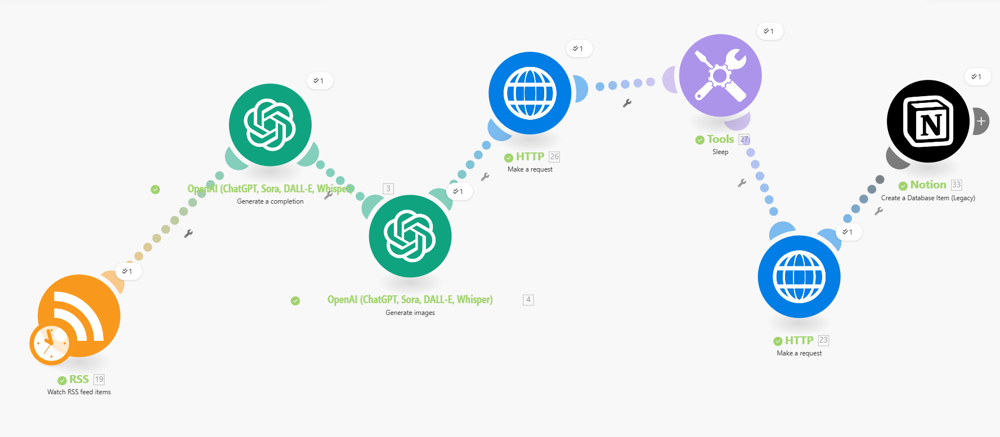
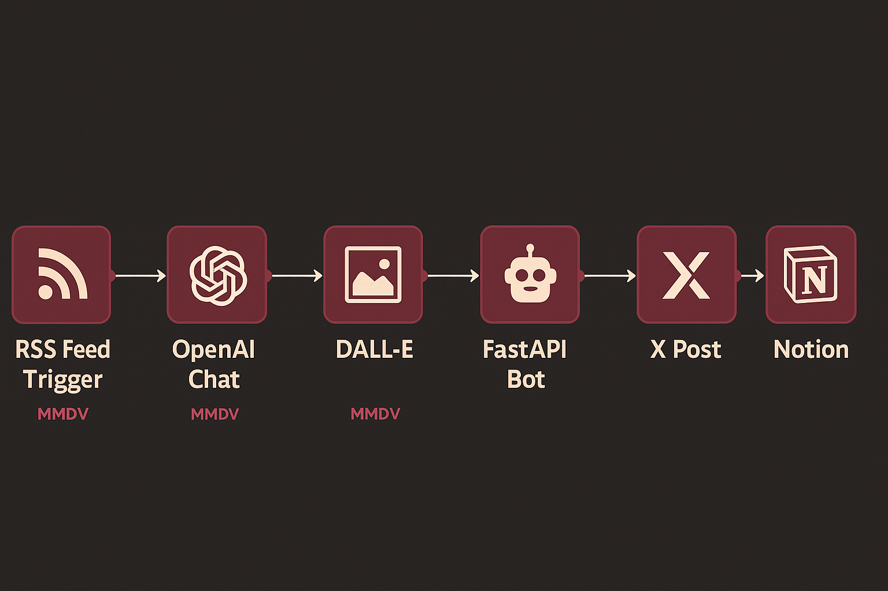
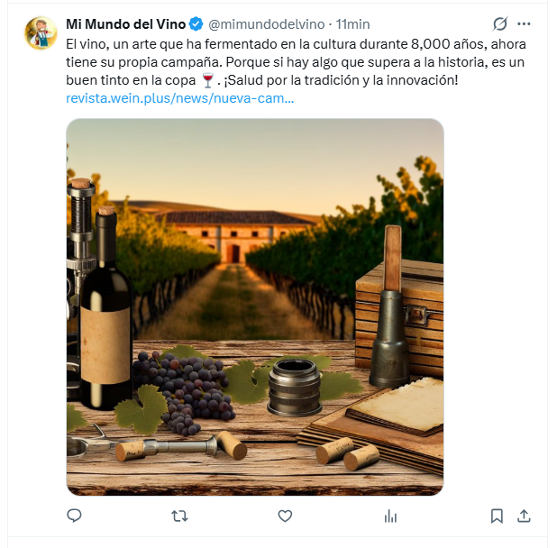

Resumen del proyecto
Este proyecto desarrolla un agente social autónomo capaz de:
- Leer noticias en tiempo real desde fuentes RSS especializadas en vino
- Seleccionar automáticamente una noticia mediante un sistema aleatorio controlado
- Generar un tweet en mi estilo (“Mi Mundo del Vino”)
- Crear una imagen coherente con el contexto de la noticia
- Publicar automáticamente en X usando un bot propio desplegado en Render
La integración está construida con Make (antes Integromat), OpenAI GPT-5.1 para texto, DALL·E 3.5 para imágenes, y un servicio backend propio en Python/FastAPI para controlar la publicación en X mediante OAuth1.
Demo del escenario
Aquí puede verse el escenario completo ejecutándose:

Arquitectura del Agente

- RSS Watcher: escucha nuevas noticias (Wein.plus, Decanter, y otras fuentes europeas)
- Selector aleatorio: un módulo “Switch” que elige 1 de 3 feeds cada día
- OpenAI GPT-5.1: crea el texto final con mi estilo
- DALL·E: genera una imagen coherente con el tema (regulatorio, enología, cambio climático…)
- FastAPI Bot: publica texto + imagen vía X API usando OAuth1 de usuario
Problemas técnicos superados
1. Limitación de 4000 caracteres en prompts
Se solucionó dividiendo el prompt en instrucciones fijas + contenido dinámico limpio.
2. Imposibilidad de fusionar múltiples RSS con “Watch”
Se resolvió usando un Switch aleatorio y luego un único módulo Retrieve RSS feed items mapeado dinámicamente.
3. Penalización de Twitter al enviar imágenes inestables
Se implementó una verificación previa + fallback en caso de error del servidor de X.
4. Render rechazando JSON por comillas dobles en texto
Se agregó un sanitizador automático que limpia JSON sin romper acentos ni emojis.
Resultado final
El agente publica de manera autónoma una noticia diaria** de vino con texto de alta calidad + imagen generada.

El resultado mantiene el estilo característico de Mi Mundo del Vino: elegante, irónico, técnico y moderno.
Código del Bot
El backend completo (FastAPI + OAuth1 + envío multipart a X) está disponible en GitHub:
https://github.com/luisromero78/mmdv-social-bot